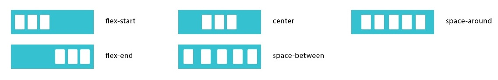
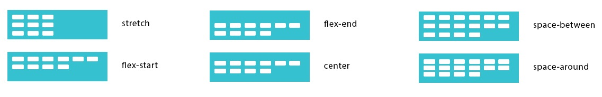

CSS Flexible Box Layout Module

Main Axis - главная ось (по горизонтали)
Cross Axis - второстепенная ось (по вертикали)
Flex Container
display
display: flex; - задание flex
justify-content : flex-start
управляет размещением элемента вдоль главной оси (по горизонтали) 
flex-start - флексы прижаты к началу строки
flex-end - флексы прижаты к концу строки
center - флексы выравниваются по центру строки
space-between - флексы равномерно располагаются с одинаковыми расстояниями между ними (первый и последний элемент прижимаются к краям контейнера)
space-around - флексы равномерно располагаются с одинаковыми расстояниями вокруг них (первый и последний элемент не прижимаются к краям контейнера)
align-items : stretch
управляет размещением элемента вдоль второстепенной оси (по вертикали)
flex-start - флексы выравниваются в начале поперечной оси контейнера
flex-end - флексы выравниваются в конце поперечной оси контейнера
center - флексы выравниваются по линии поперечной оси
stretch - флексы растягиваются таким образом, чтобы занять всё доступное пространство контейнера
baseline - флексы выравниваются по их базовой линии (по нижней части параграфа)
align-content : stretch
выравнивание многострочных элементов по вертикали (указывает, как несколько рядов должны отделяться друг от друга) 
flex-start - флексы располагаются в начале поперечной оси. Каждая следующая строка идёт вровень с предыдущей
flex-end - флексы располагаются начиная с конца поперечной оси. Каждая предыдущая строка идёт вровень со следующей
center - флексы располагаются по центру контейнер
space-between - флексы равномерно располагаются с одинаковыми расстояниями между ними (первый и последний элемент прижимаются к краям контейнера)
space-around - флексы равномерно располагаются с одинаковыми расстояниями вокруг них (первый и последний элемент не прижимаются к краям контейнера)
stretch - флексы растягиваются, заполняя контейнер равномерно (по умолчанию)
align-content отвечает за расстояние между рядами, в то время как align-items отвечает за то, как элементы в целом будут выровнены в контейнере. Когда только один ряд, align-content ни на что не влияет
flex-flow : row nowrap
рекомендуется использовать flex-flow, a не отдельные свойства (работает быстрее)flex-direction : row
задаёт направление основных осей в контейнере
row - расположение блоков по горизонтали (по умолчанию)
row-reverse - расположение блоков по горизонтали (реверсионно)
column - расположение блоков по вертикали
column-reverse - расположение блоков по вертикали (реверсионно)
flex-wrap : nowrap
задает перенос флексов
nowrap - флексы выстраиваются в одну линию
wrap - флексы выстраиваются в несколько строк
wrap-reverse - флексы выстраиваются в несколько строк реверсивно
Flex-element
order : 0
определяет порядок вывода флексов
order: 0; - по умолчанию у всех элементов
order: 3; - элемент выводится третьим по порядку
order: -1; - элемент выводится первым по порядку
align-self : auto
переопределяет значение свойства align-items (позволяет вручную управлять выравниванием конкретного элемента)
auto - выравнивать как указано у контейнера (по умолчанию)
flex-start - флексы выравниваются в начале поперечной оси контейнера
flex-end - флексы выравниваются в конце поперечной оси контейнера
center - флексы выравниваются по линии поперечной оси
stretch - флексы растягиваются таким образом, чтобы занять всё доступное пространство контейнера
baseline - флексы выравниваются по их базовой линии (по нижней части параграфа)
flex : 0 1 auto
Блоки растягиваются на всю ширину контейнера (flex = flex-grow)
flex: auto;
flex: 1;
flex-grow: 1;
flex: 1 1 auto; - занимают равное место, пока влезают
flex: 1 1 250px; - указали фиксированную минимальную ширину
flex-grow : 0
определяет для flex элемента возможность растягиваться по ширине
flex-grow: 2; - если для всех flex-item, то это равные 2 части от container-flex (заполнят всю ширину блока)
flex-shrink : 1
определяет возможность блока ужиматься при необходимостинеобходимо задать ширину элемента
flex-shrink: 2;
flex-basis : auto
базовый размер отдельно взятого блока (аналогично min-width)
flex-basis: 20%; - вместо width
flex-basis: auto; - принимает значение ширины элемента
margin
центрирование элемента
margin: auto; - центрирует 1 блок по горизонтали и вертикали
margin-left: auto; - выравнивает блок по правому краю, а остальные блоки по левому
margin-top: auto;
margin-right: auto;
margin-bottom: auto;
Примеры
Выравнивание дочерних блоков (текста внутри блока) по горизонтали и вертикали
.container {
display: flex;
align-items: center;
justify-content: center;
height: 100vh;
}
Выравнивание дочерних блоков по горизонтали и вертикали
.container {
display: flex;
height: 100vh;
}
.item {
margin: auto;
}
2 обтекающих блока, занимающих 100% ширины container
.container { display: flex; }
.box-left { flex-basis: 250px; }
.box-right { flex-grow: 1; }
Блоки с правой и левой стороны
.item:first-child {
margin-right: auto;
}
.item:last-child {
margin-left: auto;
}